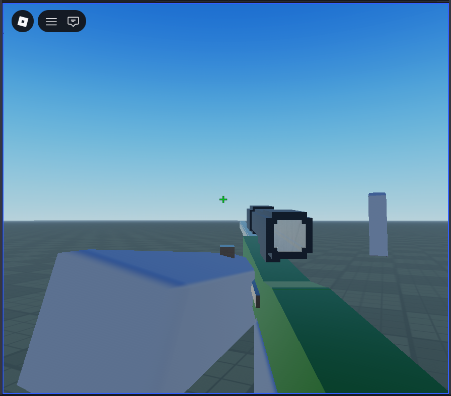
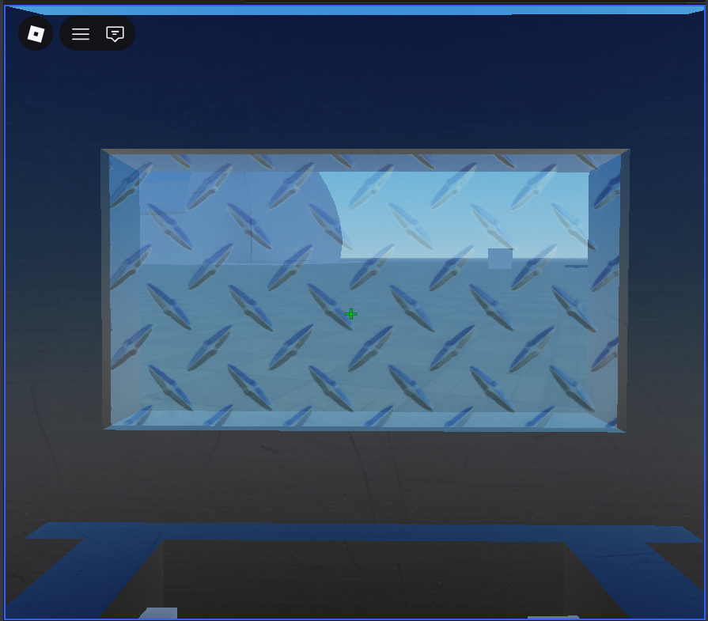
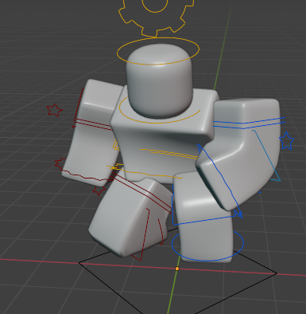
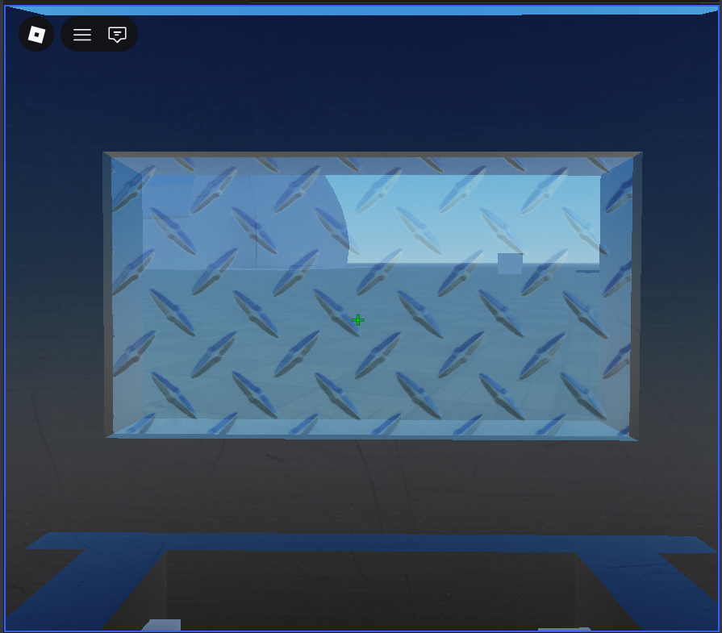
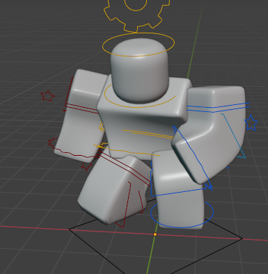

Duels is a first-person shooter (FPS) on Roblox created by Dynamitdreng307, a Danish Rivals YouTuber known for his competitive skill using luau and blender. Development began around April 2025, with the game taking heavy inspiration from Roblox Rivals’ fast-paced mechanics. Although still unfinished, Duels focuses on precision duels and skill-based combat, aiming to deliver short, intense matches. With strong community backing, and It being set to release sometime in March of 2026. it is already seen as a potential future cornerstone of Roblox FPS gaming.
Dynamitdreng307's Roblox ProfileAs the game is still under development, here are some exclusive sneak peeks I received directly from Dynamitdreng307 himself:
  
 